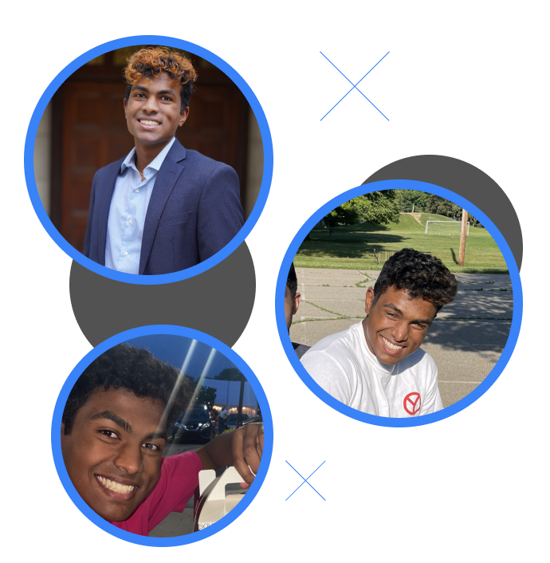

About Me
Hello! I’m Rohan Erasala, an undergraduate student at the University of Michigan.
I’m a designer, developer, engineer, and so much more! On my website, you can view
my projects, my work, and my band!
My Story:
I was born on September 23rd, 2001 in Novi, Michigan where I
lived for 8 years until I moved to Northville Michigan. After
graduating from Northville High School, I moved onto the University of Michigan to
study computer science.
It was at the University of Michigan that I developed a
strong interest in computers, applications, websites, and how they are designed
and how they operate. After working at companies such as Auria, Quicken Loans,
and Ford, I have developed a variety of technical and soft skills that have made
me an excellent fit for any role in technology.